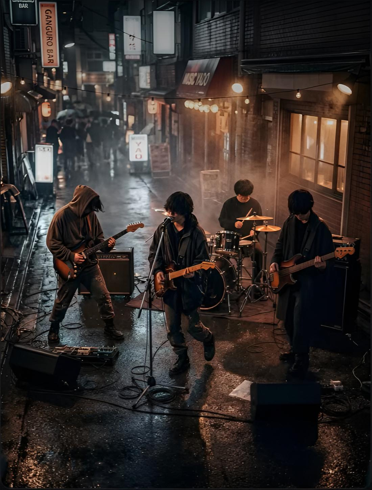
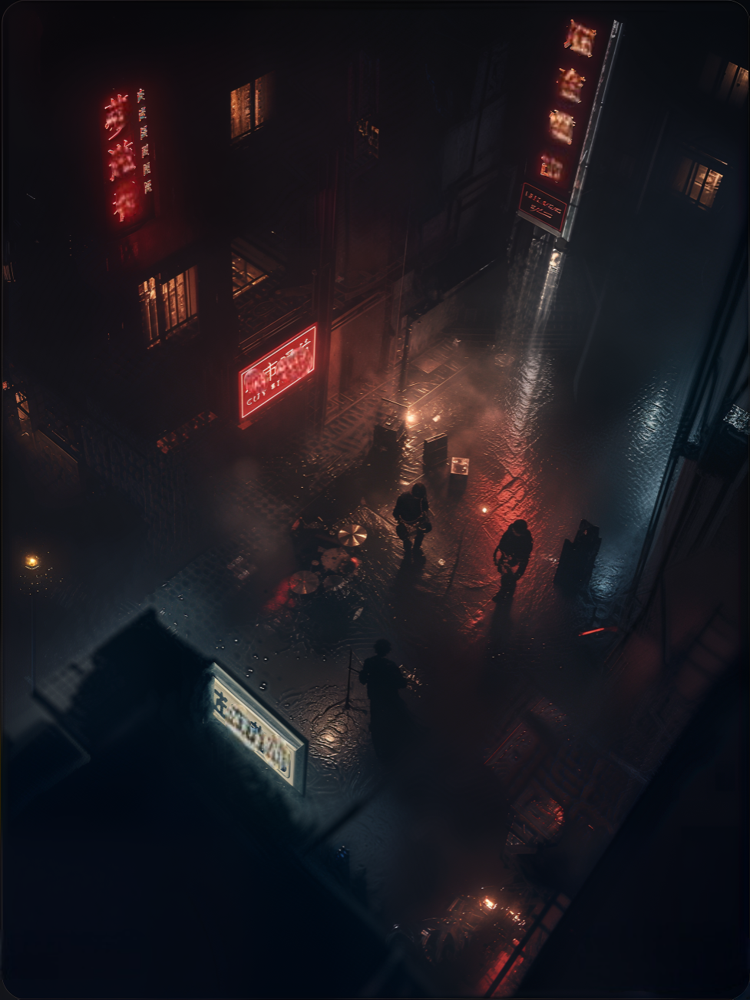
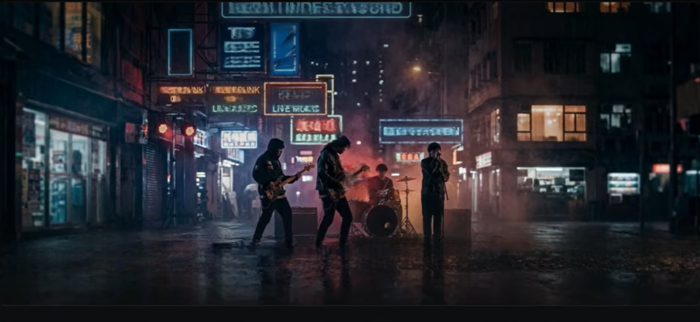

阿哲 ／ 吉他・團長
從一段 riff 開始，把四個人的聲音編織成動人的旋律。
夜行電波首次小型巡演
正在計算距離高雄首場的日子…
01 / 樂團故事
夜行電波在高雄的溫暖夜色裡相遇。四個人，幾把樂器，從一間地下室排練室開始，把失眠、離別與城市裡微小的盼望，寫進帶著搖滾的旋律。
這次，帶著第一趟巡演《清醒的頻率》出發。願每個還醒著的人，都能在歌裡找到自己的頻率。
在夜裡相遇，在音樂裡同行。
02 / 團員介紹
夜行電波讓我們認識彼此

從一段 riff 開始，把四個人的聲音編織成動人的旋律。
用溫柔而堅定的嗓音，唱出那些沒說出口的心事。
穩穩接住每段旋律，讓低頻成為前行的心跳。
每一下鼓點都毫不保留，敲亮夜晚最熱烈的瞬間。
03 / 巡演場次
下一個與你相遇的地方

11 月 1 日星期日 · 19:30
海岸線 Live House
高雄市鹽埕區新樂街 88 號
11 月 8 日星期日 · 19:30
昨日俱樂部
台南市中西區青年路 27 號
11 月 15 日星期日 · 20:00
回聲展演空間
台中市西區民生路 135 號
11 月 22 日星期日 · 20:00
月台音樂館
台北市中正區北平東路 46 號
演出前 30 分鐘開放入場・每場限量・售完為止
04 / 試聽歌曲
讓歌曲帶你回到那個失眠的夜晚
音檔無法載入，請確認音檔檔案存在。
音檔無法載入，請確認音檔檔案存在。
音檔無法載入，請確認音檔檔案存在。